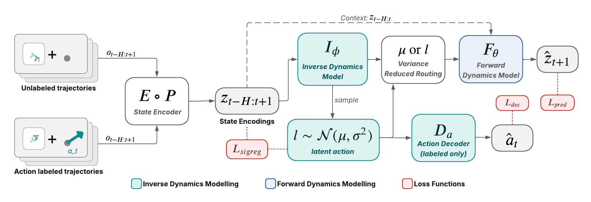
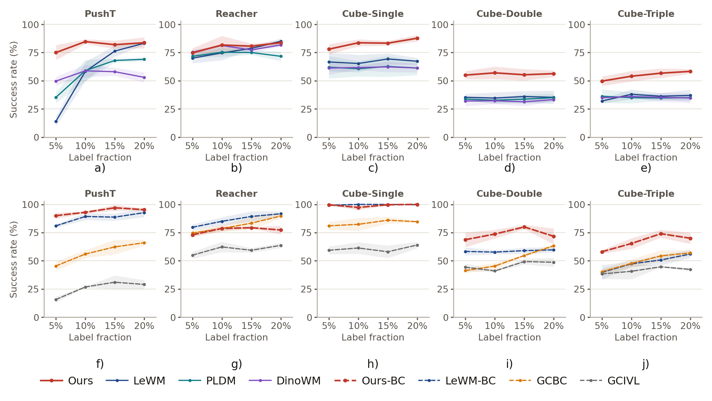

Learning world models for robotic control typically requires large amounts of action-labeled data, which is expensive to collect, whereas action-free demonstrations such as video are abundant. Latent action models address this imbalance by inferring the actions that explain observed transitions, but training the inverse dynamics model (IDM) jointly with the forward model is unstable. Existing methods therefore fix the latent action space before training the world model, or add a separate inverse-dynamics warm-up stage.
We introduce JEVA, a latent-action world model that co-trains an IDM and a forward world model end-to-end from scratch in a single stage, on a pool of trajectories in which only a small fraction of transitions carry action labels. JEVA treats the action between two visual states as a continuous Gaussian latent that can be planned over and decoded into continuous controls.
Variance-reduced routing (VRR) is what makes single-stage training work. On labeled transitions, where the action decoder keeps posteriors tight, VRR conditions the forward predictor on the posterior mean instead of a sample. This removes reparameterization noise from the predictor gradient at the cost of a small bias, and it also removes a penalty that otherwise drives latent actions toward collapse: with a warm-up stage and no VRR, every latent-action dimension collapses.
With 5% of episodes labeled, a policy trained in JEVA's latent action space matches or exceeds every baseline trained with 20% of labels on OGBench Cube-Double and Cube-Triple. Under CEM planning, JEVA leads the strongest world-model baseline by 11–22 points on all three Cube tasks.

Architecture and gradient flow. A shared encoder maps observations to latent states. The IDM infers a continuous Gaussian latent action. Variance-reduced routing passes the posterior mean to the forward predictor on labeled transitions, and keeps stochastic samples on unlabeled transitions and for the action decoder.
Inverse dynamics is posterior inference in a conditional VAE. A strictly causal IDM infers each latent action from the two states it connects, $q_\phi(\ell_t \mid z_t, z_{t+1}) = \mathcal{N}(\mu_t, \mathrm{diag}(\sigma_t^2))$. The low-dimensional bottleneck limits how much future content can leak to the predictor. A KL prior and SIGReg keep the space well scaled, so it can be sampled and searched at planning time.
A two-layer MLP decoder $D_a$ maps latent actions to action chunks, trained only on labeled transitions. The forward predictor (a 6-layer AdaLN-Zero Transformer) learns from every transition, so action-free data shapes the same latent action space that the labels ground.
Each step draws a labeled batch $B_L$ and an unlabeled batch $B_U$. VRR chooses what the forward predictor sees:
$$\bar{\ell}_t = \begin{cases} \mu_t, & t \in B_L \\ \ell_t \sim q_\phi, & t \in B_U \end{cases}$$
The posterior-mean gradient is deterministic, so its error is pure bias. The sampled gradient's error is pure variance. When posteriors are tight (width $\tau$), the bias is $O(\tau^4)$ and the variance is $O(\tau^2)$, so VRR wins. The action decoder keeps labeled posteriors in exactly that regime. Sampling also adds an implicit penalty $\mathrm{tr}(J\Sigma J^\top)$ that pushes the predictor to ignore $\ell$. VRR removes it on the labeled branch, which prevents latent-action collapse.
At test time JEVA selects latent actions and decodes them with the frozen decoder. It can do this either with CEM planning, which rolls out the forward model in a receding horizon, or with a goal-conditioned latent-action policy (JEVA-BC), which amortizes planning into a single forward pass.

Success rate vs. fraction of labeled episodes, with CEM planners (a–e) and learned policies (f–j). Baselines train on the labeled subset only. JEVA additionally uses the action-free pool. Mean ± std over 3 seeds of 100 episodes each.
| Method | Type | PushT | Reacher | Cube-Single | Cube-Double | Cube-Triple |
|---|---|---|---|---|---|---|
| LeWM | Plan | 51.3 | 70.0 | 66.7 | 35.3 | 32.0 |
| PLDM | Plan | 35.3 | 71.7 | 62.0 | 33.7 | 36.3 |
| DINO-WM | Plan | 49.7 | 75.3 | 61.3 | 32.0 | 35.0 |
| JEVA | Plan | 75.0 | 74.7 | 78.0 | 55.0 | 49.7 |
| LeWM-BC | Policy | 81.0 | 79.7 | 99.3 | 58.3 | 39.7 |
| GCBC | Policy | 45.3 | 74.7 | 81.0 | 41.3 | 40.3 |
| GCIVL | Policy | 15.7 | 55.0 | 59.3 | 44.3 | 38.3 |
| JEVA-BC | Policy | 90.0 | 73.0 | 99.7 | 68.7 | 58.0 |
Full results at 5/10/15/20% labels, with standard deviations, are in the paper's appendix.
Two successful episodes and one failure per task. In each clip, the left panel shows the episode as it unfolds and the right panel shows the goal.
@article{singh2026jeva,
title = {JEVA: Joint Encoders for Variational Action World Models},
author = {Singh, Aditya and Mehta, Sanyam and Wang, Yixin and Fazeli, Nima and Bucher, Bernadette},
journal = {arXiv preprint},
year = {2026}
}